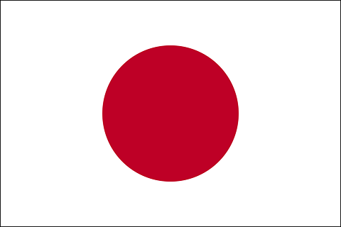

Japani

- Hallintomuoto perustuslaillinen monarkia
- Keisari Naruhito
- Pääkaupunki Tokio
- Pinta-ala 377 954,84 km²
Yleistä
Japani (jap. 日本, Nihon tai Nippon, virallisesti 日本国, Nihon koku tai Nippon koku) on saarivaltio Tyynessämeressä Itä-Aasiassa. Se sijaitsee Kiinan, Korean niemimaan ja Venäjän itäpuolella, ulottuen pohjoisesta Ohotanmereltä etelään Itä-Kiinan merelle. Maan nimen muodostavat kirjoitusmerkit tarkoittavat ”auringon juurta” tai ”auringon lähdettä”, minkä vuoksi Japania kutsutaan joskus ”nousevan auringon maaksi”. Japanin pääkaupunki ja suurin asutuskeskus on Tokio.
Japani koostuu yli 3 000 saaresta, joista suurimmat ovat Honshū, Hokkaidō, Kyūshū ja Shikoku. Valtaosa saarista on vuoristoisia ja monet myös tuliperäisiä; esimerkiksi Japanin korkein vuorenhuippu Fuji on tulivuori. Maan asukasluku on maailman kymmenenneksi suurin, yli 127 miljoonaa henkeä. Suur-Tokion alue, johon kuuluu Tokion kaupunki ja useita ympäröiviä prefektuureja, on maailman suurin metropolialue yli 30 miljoonalla asukkaallaan.
Arkeologisen tutkimuksen mukaan Japanin saarilla on ollut asutusta jo myöhäispaleoliittisella kaudella. Ensimmäiset kirjatut maininnat Japanista esiintyvät kiinalaisissa teksteissä ensimmäiseltä vuosisadalta. Otettuaan käyttöön nykyisen perustuslakinsa vuonna 1947 Japani on ollut perustuslaillinen monarkia, jolla on keisari ja vaaleilla valittu parlamentti. Nykyään Japani on suurvalta, jolla on ostovoimapariteetilla korjatulla bruttokansantuotteella mitattuna maailman kolmanneksi suurin talous. Maa kuuluu Yhdistyneisiin kansakuntiin, G8-ryhmään ja APECiin.
Maantiede
Yli kolmesta tuhannesta saaresta koostuva Japani sijaitsee Itä-Aasiassa Tyynenmeren rannikolla. Maan tärkeimmät saaret pohjoisesta etelään ovat Hokkaidō, Honshū (pääsaari), Shikoku ja Kyūshū. Ryūkyūsaaret, joihin kuuluu myös Okinawa, sijaitsevat Kyūshūn eteläpuolella ulottuen yli tuhannen kilometrin päähän lähes Taiwanille saakka. Maan kokonaispinta-ala on 377 835 neliökilometriä, josta noin 75–80 prosenttia on vuoristoa ja lähes yhtä suuri osa on metsien peitossa. Koska suuri osa maan alueesta on soveltumatonta asutuksen, maatalouden tai teollisuuden käyttöön jyrkkien korkeuserojen, ilmaston ja maanjäristysten aiheuttaman maanvyöryriskin vuoksi, Japanin alavilla rannikkoalueilla väestötiheys on erittäin suuri. Maa on yksi maailman tiheimmin asutuista.
Japanilla on rannikkoa yhteensä 29 751 kilometriä. Sitä ympäröivät meret ovat Filippiinienmeri etelässä, Tyynimeri idässä, Ohotanmeri pohjoisessa, Japaninmeri lännessä ja Itä-Kiinan meri lounaassa.
Maa sijaitsee tuliperäisellä ja maanjäristysherkällä alueella ”Tyynenmeren tulirenkaan” varrella kolmen mannerlaatan yhtymäkohdassa. Alueella on yhteensä noin 160 tulivuorta, joista kolmasosa on aktiivisia. Japanissa on jatkuvasti pieniä maanjäristyksiä ja suurempia, tuhoisia maanjäristyksiä useita kertoja vuosisadassa. Maanjäristykset johtavat usein tsunameihin. Lähihistorian vakavat maanjäristykset ovat Kōben maanjäristys vuonna 1995, Chūetsun maanjäristys vuonna 2004 ja Tōhokun maanjäristys vuonna 2011.
Kasvillisuus
Japanin saariston pituus on saanut ilmaston tavoin aikaan monipuolisen kasvillisuuden ja eläimistön. Japanissa elää noin 4 500 syntyperäistä kasvilajia. Lajien suureen määrään ovat vaikuttaneet erityisesti lämpötilojen suuri vaihtelu ja suuret sademäärät. Japanin kasvillisuus voidaan jakaa viiteen vyöhykkeeseen: subtrooppinen alue eteläisimmillä saarilla, lämmin ikivihreiden lehtipuumetsien alue pääsaarten eteläosissa, viileä lehtipuumetsien alue Honshūn pohjois- ja Hokkaidōn eteläosassa, subalpiininen vyöhyke Keski- ja Pohjois-Hokkaidōlla sekä alpiininen vyöhyke Honshūn ja Hokkaidōn vuoristoalueilla. Subtrooppisen alueen kasvillisuudella on yhteyksiä Malakan niemimaan lajistoon, kun taas maan keskiosien kasvillisuudella pikemminkin Koreaan ja Kiinaan. Japanin kasvilajisto on runsaan sadan vuoden aikana muuttunut suuresti paitsi kaupungistumisen, myös ihmisen Euroopasta ja Pohjois-Amerikasta tuomien tulokaslajien vuoksi: Meiji-kaudelta lähtien maahan on tuotu arviolta 200–500 kasvilajia.
Japanin eläimistö koostuu suurelta osin Kiinasta ja Koreasta saapuneista lauhkean vyöhykkeen lajeista, mutta myös Kaakkois-Aasian subtrooppisista ja Siperian subarktisista lajeista. Koska esihistoriansa aikana Japanin saaristo on ollut vuoroin erossa manner-Aasiasta ja vuoroin yhteydessä siihen, eläinlajien muuttohistoria alueelle on monimutkainen. Japanissa elää joitakin endeemisia lajeja, kuten japaninmakaki ja japaninjättisalamanteri; Ryūkyū-saarten lajistoon kuuluu vuorostaan joitakin ”eläviä fossiileja”, kuten iriomotenkissa. Tiheästä asutuksesta huolimatta suuria maanisäkkäitä elää Japanin vuoristoalueilla suhteellisen paljon. Niihin kuuluvat muun muassa karhut, villisiat, supikoirat, ketut ja peurat. Lintulajeja Japanin alueella elää noin 600; maa sijaitsee merkittävällä lintujen muuttoreitillä. Maan rikas merilajisto, johon kuuluu lukuisten kala- ja äyriäislajien lisäksi pyöriäisiä, valaita ja delfiinejä, on suureksi osaksi kylmän ja lämpimän merivirran kohtaamisen ansiota Japanin lähialueilla.